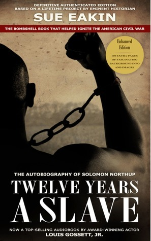

"Twelve Years a Slave"
- Read on 2014-08-09
- Rating: ️️️️️
- Format: 🎧 (7 hours 51 minutes)
Paul Stout recommended this book to me, saying it should be required reading for all school children. I completely agree (in the same way as I would recommend "Night" by Elie Wiesel). What a fascinating view into the peculiar institution of slavery. It's hard to believe that such atrocities were carried out on fellow human beings. That being said, Solomon "Platt" Northup is such a great person, a natural narrator of his experiences, and worthy of emulating in a variety of ways.
- Prior: Ender's Shadow
- Next: Team of Rivals